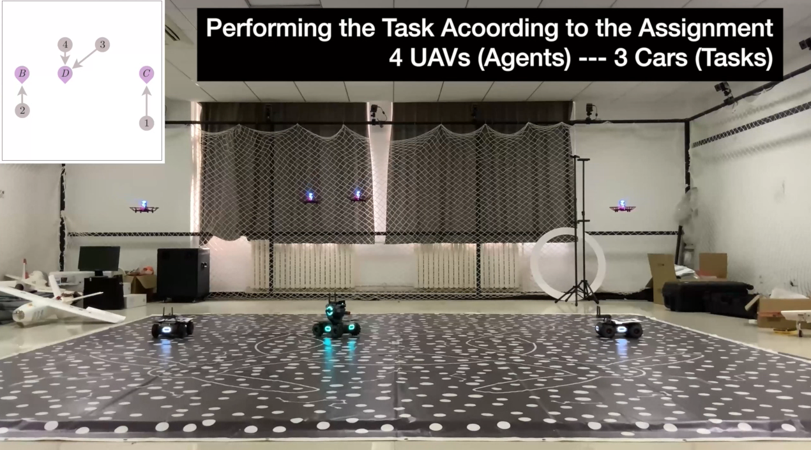
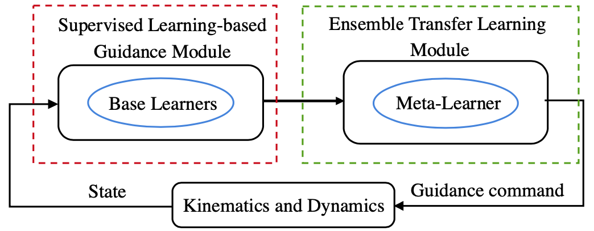
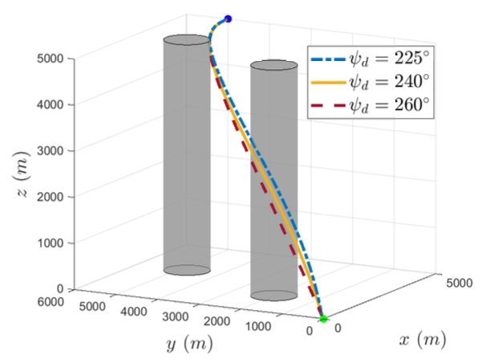
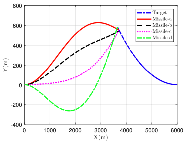
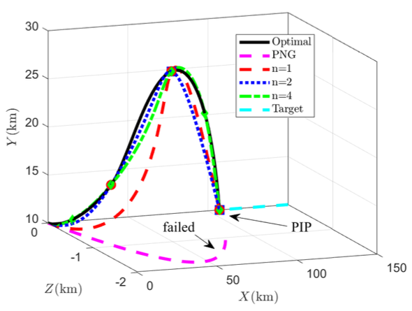

|
Research Projects
Airborne Behavior Monitoring of Ground Moving Targets
|
 |
Computationally e铿�icient multi-target tracking with guaranteed performance
Distributed multi-target tracking algorithms for unmanned swarm heterogeneous systems
Target behavior analysis algorithm using a hybrid domain and data driven approach
Algorithm validation through real flight test
|
Data-Driven Computational Guidance for Tactical Missiles
|
 |
Generalized prediction-correction framework for constrained computational guidance
Computational guidance using supervised learning
Computational guidance using reinforcement learning
Increasing learning e铿�iciency and effectiveness in computational guidance
Safe learning in data-driven computational guidance
|
Efficient and Optimal Trajectory Generation for Aerial Robots
|
 |
Differential dynamic programming with flexible final time
Differential game differential dynamic programming with flexible final time
Stochastic differential dynamic programming
Differential dynamic programming with interior waypoint constraints
Algorithm validation through real flight test
|
Optimal Interception Guidance with Inferior Maneuverability
|
 |
One-on-one optimal interception guidance with inferior maneuverability
Capturability analysis of one-on-one guidance with limited maneuverability
Cooperative optimal interception guidance with inferior maneuverability
Integrated allocation and guidance for many-to-many scenario
|
Constrained Optimal Guidance with Clear Physical Interpretability
|
 |
Optimal guidance for information maximization
Optimal cooperative guidance for target encirclement
Optimal midcourse guidance for velocity maximization
Optimal guidance for impact angle and time constraints
|
|